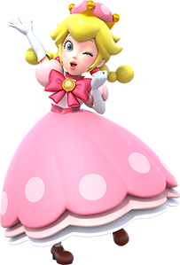
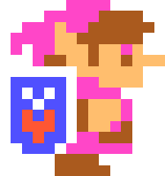
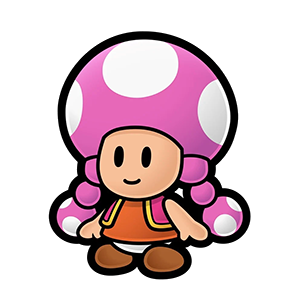
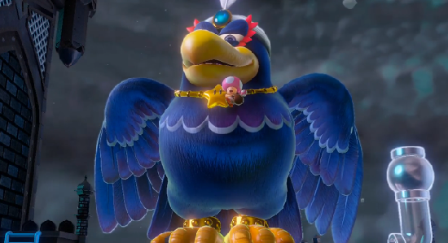
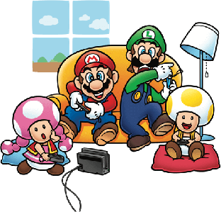
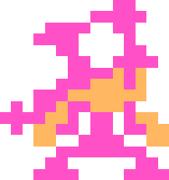
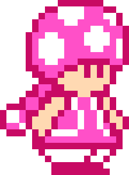
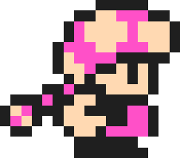
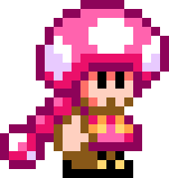

This is my page on Toadette, the Super Mario character. She is a pink Toad that lives in the Mushroom Kingdom, and sometimes goes on adventures with Mario. Unlike most Toads, who have a white cap with coloured spots on it, Toadette has a pink cap with white spots on it, with two pigtails growing out of it.
Her first appearance was in Mario Kart: Double Dash!! when it first released in 2003, and she's been appearing consistently in the Mario series ever since! Starting out as a character meant for spin-off games specifically, she quickly found herself becoming a main character, and even began appearing in the main series 2D platformer games starting with Super Mario Run in 2016!
Her most prominent appearance to date would be in Captain Toad: Treasure Tracker, which released on the Wii U in 2014 and on the Nintendo Switch and Nintendo 3DS in 2018, where she was the second main playable character after Captain Toad, and played a vital role in the game's story.
Powers and skills
Toadette has pretty much all the skills that Mario has, and she can also use the power-ups he can use too, as long as she is playable in the game in question. A few power-ups she has been shown to be able to use are the Raccoon Leaf, the Super Leaf, the Propellor Mushroom, the Cat Bell, and the Elephant Fruit. In New Super Mario Bros. U Deluxe, which was released in 2019, she can also transform into “Peachette,” which is a form that is exclusive to her, and that is a cross between herself and Princess Peach. In Super Mario Maker 2, she can also use the Master Sword power-up, which turns her into a clone of Link from The Legend of Zelda with his original NES appearance. If she changes into Link in multiplayer, her clothes will be pink in order to be easily distinguished from other players.


Personality

Toadette's personality can be different depending on which game or adaptation that we see of her. Sometimes she is very kind and sweet. In Paper Mario: The Thousand Year Door, Toadette gives Mario some tutorials on how to play the game and is very friendly to him while doing so, and is even implied to have a minor crush on him. When Mario has the last tutorial, she gets quite emotional and runs off crying, because she won't see him again for the rest of the game.
However in other games, such as Super Mario Maker 2, she can come across as boisterous or rude. In the game's Story Mode, she treats her worker Toads working on rebuilding Peach's castle like slaves, and they constantly complain about her upper management mistreatment and low pay but she doesn't give a care. She, however, thinks that her work is beautiful and brags about it constantly.
In other words, Toadette is very inconsistent. Some games portray her as a sweet or gentle person, and other games portray her as a very self-absorbed narcissist that puts others' needs below hers. In any case, I like both interpretations of the character, so there you go.
List of friends and enemies


Toadette has loads of friends. She's on very good terms with Mario, often going on adventures with him and following his leadership. As aforementioned, in the Paper Mario: The Thousand Year Door, Toadette is implied to have a crush on Mario.
She also gets along with Luigi, who comforts her after the papercraft she made was destroyed in Mario & Luigi: Paper Jam.
She gets along with Princess Peach, as she is shown to have very good chemistry with her in Mario Superstar Baseball and Mario Super Sluggers.
Toadette and Daisy are shown to be very good friends, since they are shown conversing in the intro to Super Mario Bros. Wonder. When Bowser shows up, Toadette falls over and Daisy catches her.
The original Toad named “Toad” with the red cap and the blue jacket is said to be her brother, however, this is debatable since Nintendo has flip-flopped on deciding to retcon it.
She was friends with Captain Toad, but at the end of the game he saw a clear pipe (the Odyssey in the Nintendo Switch and 3DS versions) while they were riding a minecart and left Toadette behind in it. So yeah, it looks like their friendship is on the rocks!
She's also been shown to be on good terms with Yellow Toad and Blue Toad, having gone on a few adventures with them. I have a headcanon that Toadette and Yellow Toad are dating, but that's just a headcanon since they're never actually shown dating in the games. I also have a headcanon that Toadette has a frenemy sort of rivalry with Blue Toad.
Toadette and Bowser are enemies, and they have had big fights in lots of games where Toadette had joined forces with Mario and company. Such examples include Super Mario Run and New Super Mario Bros. U Deluxe. She also has a negative relationship with Wingo, a large black crow that kidnapped her in her most prominent appearance, Captain Toad: Treasure Tracker.
Trivia
Toadette's Peachette form inspired the Bowsette meme, which was an absolute disgrace to humanity. If you like Bowsette, you're literally nothing more than a walking red flag. Peachette is cool though (although her inclusion really wrecked playing New Super Mario Bros. U in multiplayer).
Toadette will appear in Super Mario Bros. Wonder as a playable character when it releases in October 2023.
She is not the only female Toad, as a few others have appeared in the Paper Mario spin-off games. However, she's the only one to appear in main series entries.
In my opinion, Toadette should be playable in more games.
Toadette's playable appearance in Super Mario Maker 2 caused the team behind the game to create some new assets of her for the various game styles and what she would've looked like if she were present as a playable character in Super Mario Bros. 1, Super Mario Bros. 2 (via the SMB2 Mushroom power-up), Super Mario Bros. 3, and Super Mario World.




Gallery
This is just a bunch of miscellaneous images that I had left over from this project, so I'm just gonna add them here! Yeah! Yay!